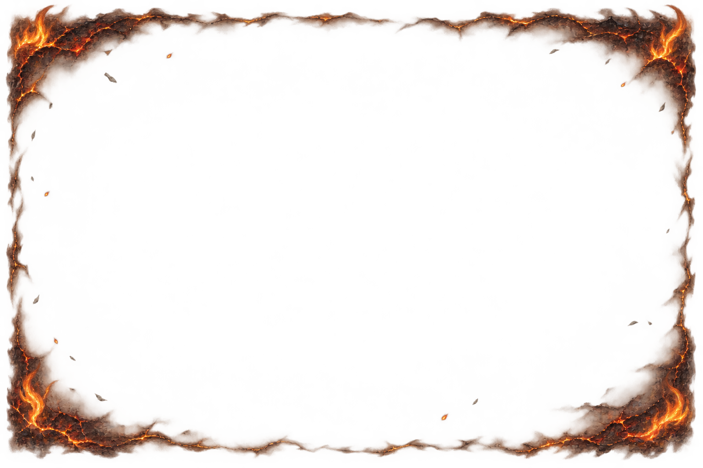
Breachline / UI art / 10 November 2026
The board carries the spell.
The unit stays clear.
Seven painted tile effects and seven matching borders for units on affected ground. Compare the full tile treatment with the narrower border, then check their appearance at board size. All 15 source PNGs, including the emblem sheet, have transparent backgrounds.
Burning

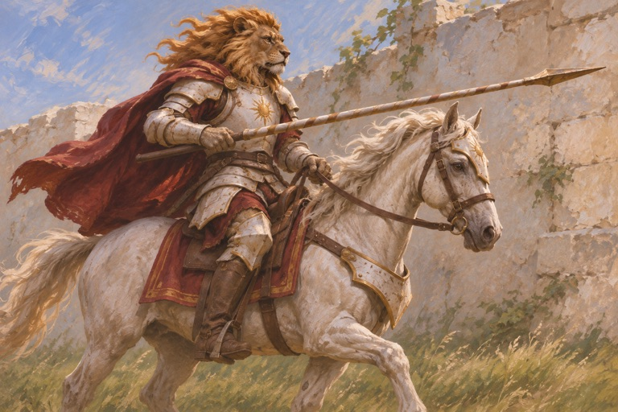
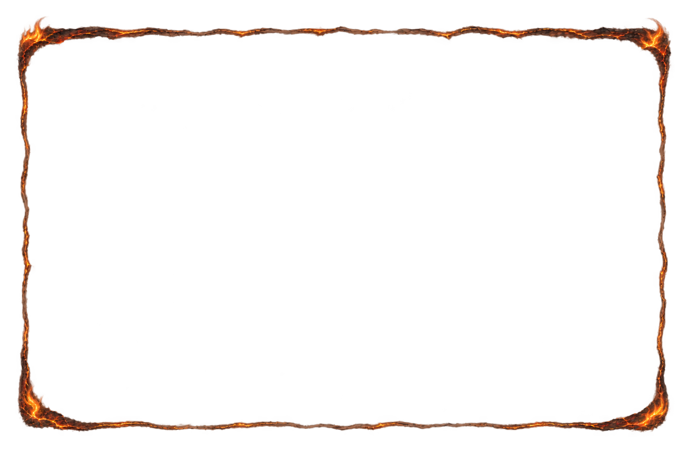
Affected unit
ui-unit-border-burn.png ↗
Board-size view
Frozen
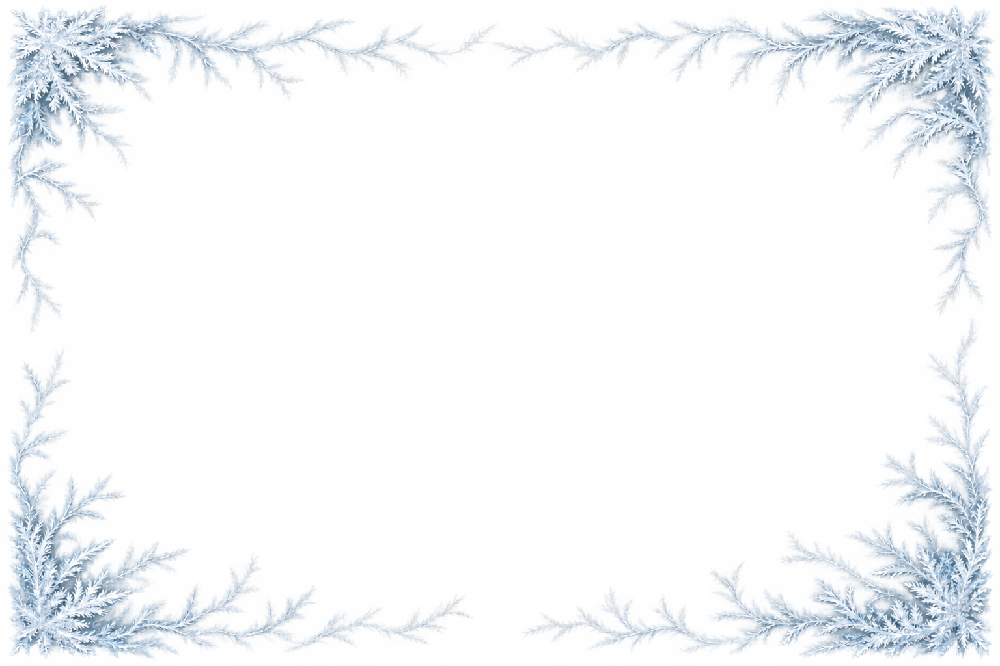
Empty tile
ui-tile-frost.png ↗
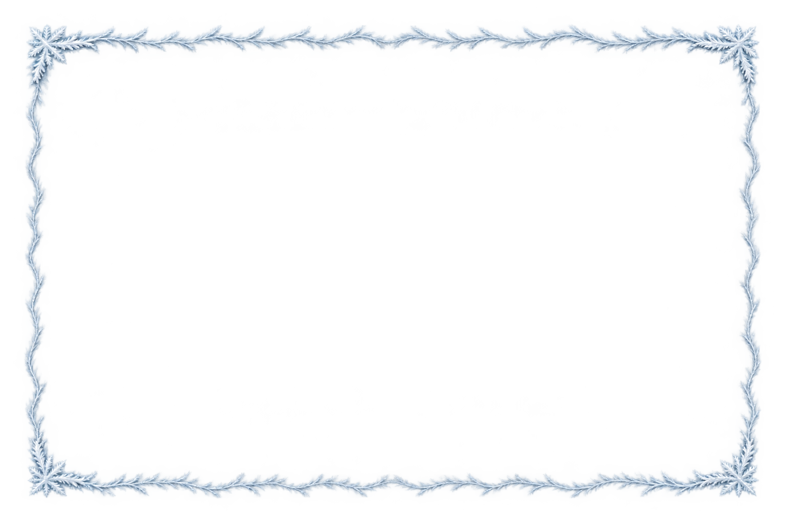
Affected unit
ui-unit-border-frost.png ↗
Board-size view
Thorns
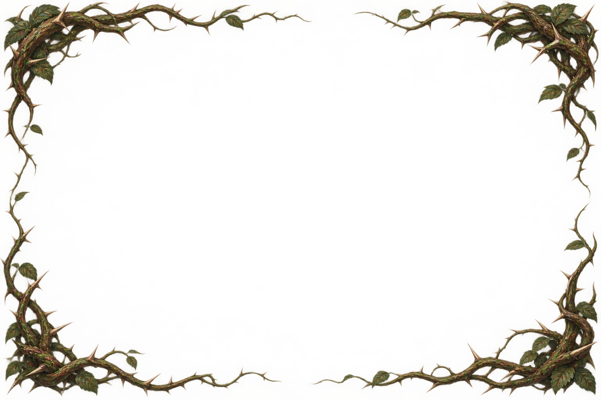
Empty tile
ui-tile-thorns.png ↗
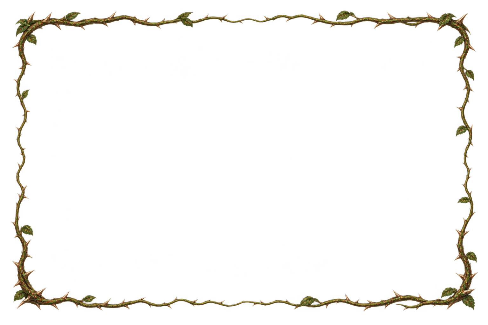
Affected unit
ui-unit-border-thorns.png ↗
Board-size view
Blighted
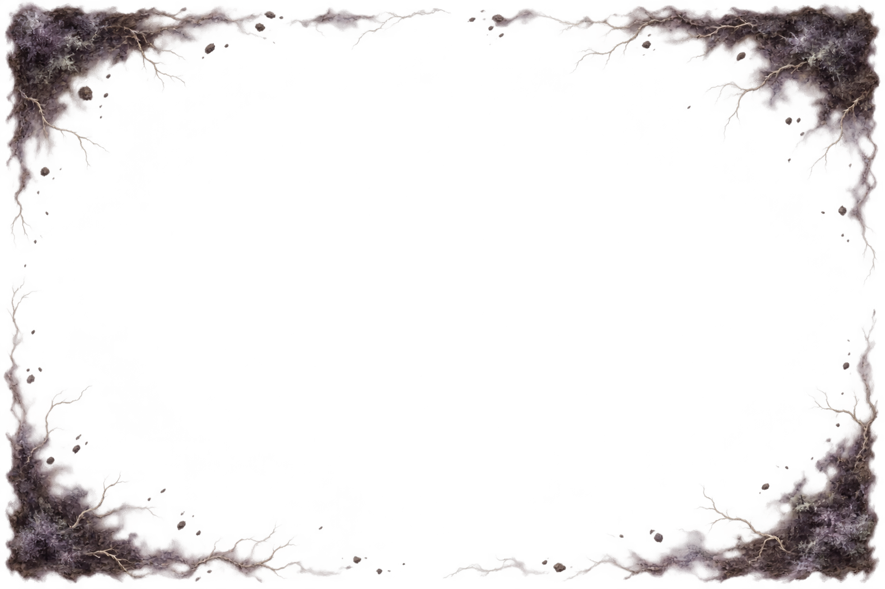
Empty tile
ui-tile-blight.png ↗
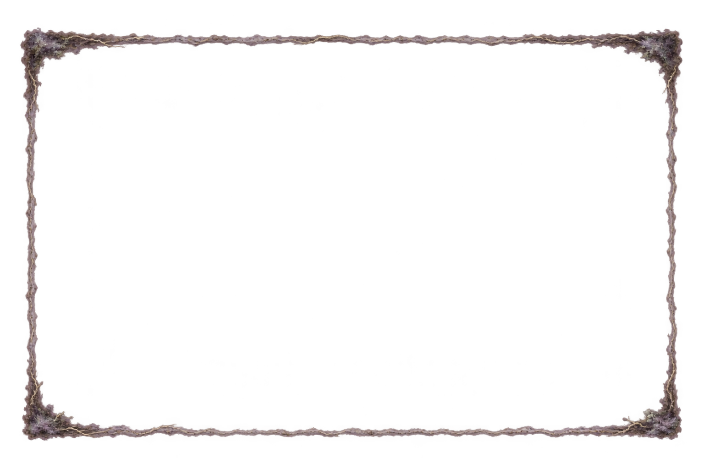
Affected unit
ui-unit-border-blight.png ↗
Board-size view
Consecrated
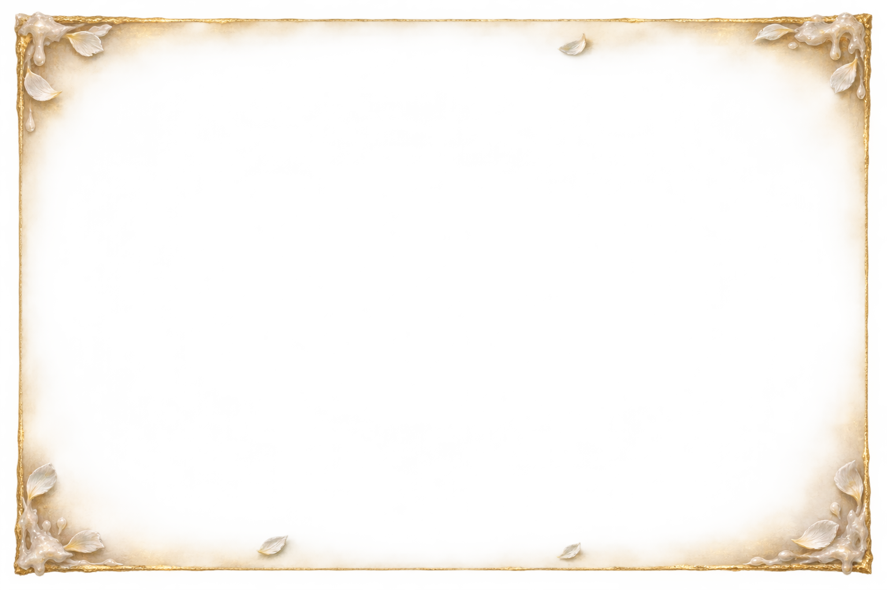
Empty tile
ui-tile-holy.png ↗
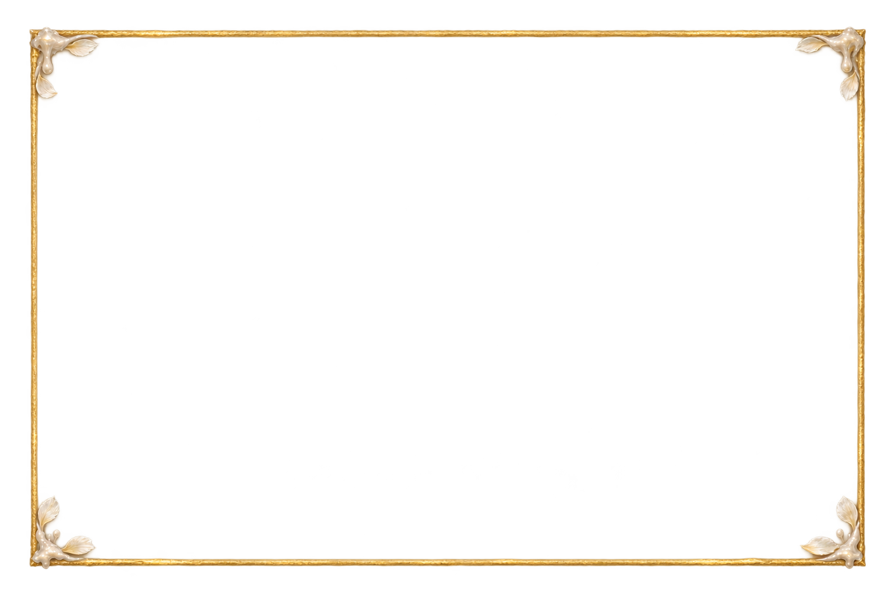
Affected unit
ui-unit-border-holy.png ↗
Board-size view
Snare
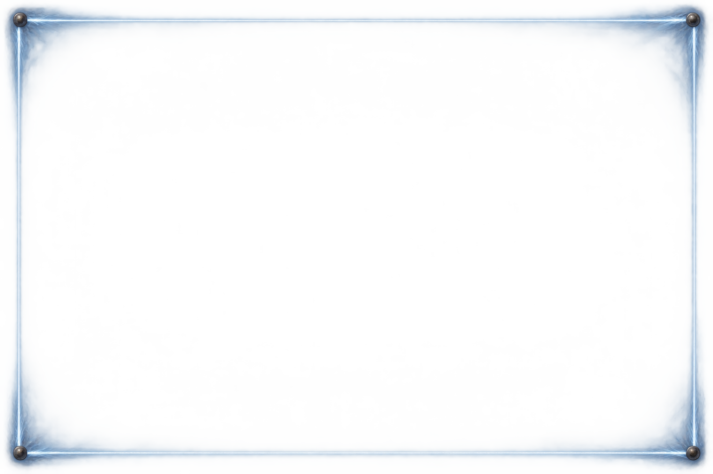
Empty tile
ui-tile-snare.png ↗
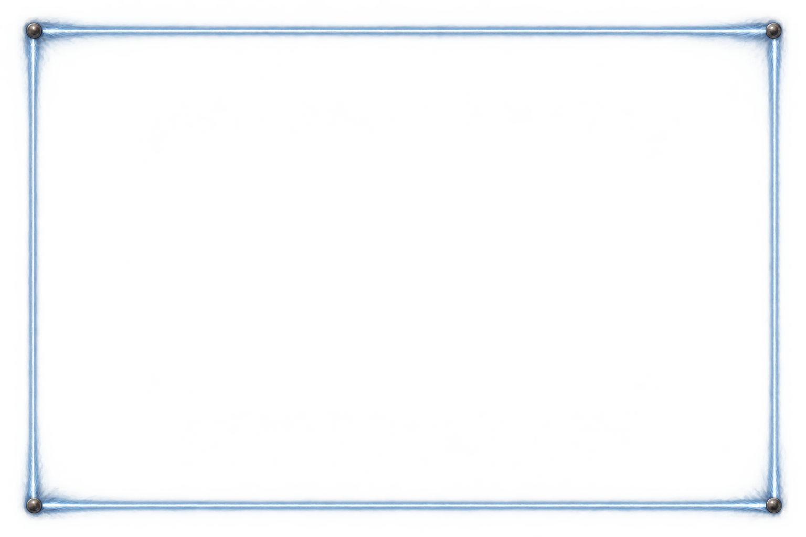
Affected unit
ui-unit-border-snare.png ↗
Board-size view
Charged
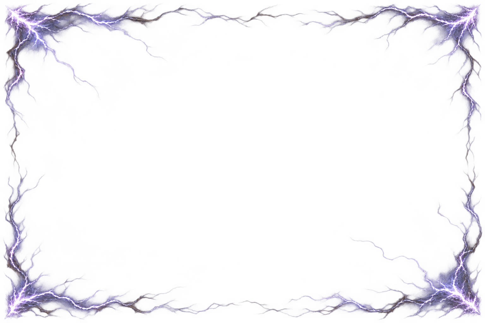
Empty tile
ui-tile-charge.png ↗
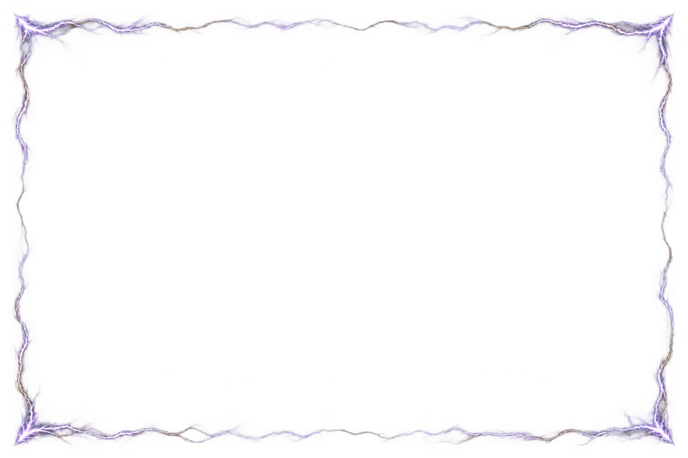
Affected unit
ui-unit-border-charge.png ↗
Board-size view
Counter emblems
The seven emblems in their required order. The samples below show each emblem at a maximum height or width of 20 pixels.
Burning
Frozen
Thorns
Blighted
Consecrated
Snare
Charged
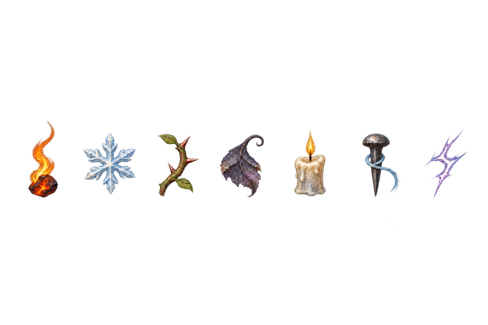
These assets are now in the game and ready for review. The game’s rules determine which units are affected; the lancer is used here only to compare border readability.